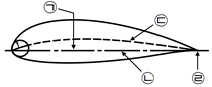
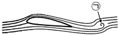
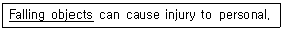

항공기관정비기능사 (2013-10-12 기출문제)
1과목: 비행원리
1. 비행기의 기수가 회전방향과 반대인 방향으로 틀어져 있는 움직임을 무엇이라 하는가?
- 스핀(spin)
- 역틀림(adverse yaw)
- 젖힘효과(swept back effect)
- 가로진동(lateral oscillation)
(정답률: 91%)

2. 헬리콥터의 수직꼬리날개를 장착한 이유로서 가장 옳은 것은?
- 키놀이 모멘트로 기체의 피치업 현상을 감소시키기 위하여
- 키놀이와 옆놀이 모멘트로 기체의 추력을 감소시키기 위하여
- 키놀이와 옆놀이 모멘트로 기체의 추력을 증가시키기 위하여
- 빗놀이 모멘트로 기체에 대한 반작용 토크를 상쇄시키기 위하여
(정답률: 78%)
3. 비행기의 무게가 2200kgf, 날개면적이 55m2, 실속받음각에서의 양력계수가 1.6일 때 실속속도는 몇 m/s인가? (단, 공기의 밀도는 0.125kgfㆍs2/m4이다.)
- 10
- 15
- 20
- 25
(정답률: 63%)
4. 헬리콥터의 상승비행 시 피치각의 크기는 정지비행 때와 비교하여 어떠한가?
- 작아진다.
- 커진다.
- 동일하다.
- 작아지다가 커진다.
(정답률: 82%)
5. 비행기의 기준축과 각축에 대한 회전 각운동에 대해 옳게 나열한 것은?
- 가로축 - X축 - 빗놀이(YAWING)
- 가로축 - Y축 - 키놀이(PITCHING)
- 수직축 - Z축 - 빗놀이(ROLLING)
- 수직축 - Z축 - 키놀이(PITCHING)
(정답률: 76%)
6. 조종면 뒷전 부분의 압력분포를 변화시키는 역할을 함으로써 힌지 모멘트에 큰 변화를 생기게 하는 장치를 무엇이라 하는가?
- 태브
- 고양력장치
- 고항력장치
- 공력평형장치
(정답률: 72%)
7. 날개에 발생하는 유도항력을 줄이기 위한 장치는?
- 플랩
- 슬롯
- 윙렛
- 슬랫
(정답률: 82%)
8. 활공기가 고도 1000m에서 20Km의 수평활공거리를 활공할 때 양항비는 얼마인가?
- 0.⑤
- 0.2
- 20
- 50
(정답률: 67%)
9. 대기권에서 오존층이 존재하는 곳은?
- 대류권
- 열권
- 중간권
- 성층권
(정답률: 75%)
10. 헬리콥터에서 회전날개의 깃에 비틀림각을 주는 주된 이유는?
- 유도속도를 깃 끝에서 집중하도록 하기 위해서
- 유도속도를 깃 뿌리에 집중하도록 하기 위해서
- 유도속도를 깃 중심에 집중하도록 하기 위해서
- 유도속도를 깃 전체에 균일하도록 하기 위해서
(정답률: 71%)
11. 관내의 공기 흐름을 비압축성 흐름으로 가정할 때 설명으로 틀린 것은?
- 연속방정식을 만족한다.
- 흐름이 고속일 때 만족한다.
- 질량보존의 법칙을 만족한다.
- 유체의 속도와 유체가 흐르는 단면적의 곱은 일정하다.
(정답률: 55%)
12. 비행기가 가속도 없이 정상 비행할 경우 하중배수는 얼마인가?
- ０
- 0.5
- 1.0
- 1.5
(정답률: 74%)
13. 그림과 같은 날개골에서 ㉠~㉣이 지시하는 명칭의 연결이 틀린 것은?

- ㉠ - 최대 두께
- ㉡ - 시위선
- ㉢ - 평균캠버선
- ㉣ - 뒷전
(정답률: 82%)
14. 항공기가 출발하는 순간, 날개 아랫면을 통과한 공기입자가 먼저 뒷전에 도달하여 윗면으로 감아 올라간다. 이때 뒤늦게 도착한 날개 윗면을 통과한 공기 입자가 이를 밀어냄으로써 생기게 되는 그림에서 ㉠이 지시하는 와류는?

- 출발 와류
- 날개 끝 와류
- 속박 와류
- 말굽형 와류
(정답률: 57%)
15. 흐르지 않고 정지되어 있는 유체에 대한 설명으로 틀린 것은?(오류 신고가 접수된 문제입니다. 반드시 정답과 해설을 확인하시기 바랍니다.)
- 유체내의 압력은 모든 면에 수직으로 작용한다.
- 동일 높이에 있는 두 점의 압력의 크기는 항상 같다.
- 유채내의 임의의 한 점에 작용하는 압력의 크기는 모든 방향에서 동일하다.
- 밀폐된 용기에 있는 기체에 가한 압력의 크기는 압력을 가한 방향이 가장 크다.
(정답률: 53%)
16. 지상에 주기시켜 놓은 항공기를 강풍으로부터 보호하기 위하여 지상에 고정시키는 작업은?
- 잭작업(jacking)
- 견인작업(towing)
- 계류작업(mooring)
- 호이스트작업(hoisting)
(정답률: 81%)
17. 마이크로미터 사용법에 대한 설명으로 틀린 것은?
- 래칫을 가볍게 돌려 스핀들의 측정면이 일감의 중심에 오도록 밀착시킨다.
- 따르락하는 소리가 2~3회 나도록 래칫을 돌려 측정면이 완전히 닿도록 한다.
- 눈금을 읽을 때에는 일감이 마이크로미터와 접촉된 상태에서 직접 읽는 것이 좋다.
- 마이크로미터를 사용한 후에는 앤빌과 스핀들이 서로 맞닿게 하여 보관한다.
(정답률: 89%)
18. 자력선을 이용하여 재료 표면이나 표면 바로 밑의 균열을 발견하는 비파괴검사 방법은?
- 자분탐상검사
- 방사선투과검사
- 형광침투검사
- 초음파탐상검사
(정답률: 88%)
19. 전자장비를 이용한 전자유도를 이용하여 탐침으로 항공기의 중요 패스너 홀 내부의 균열 등을 검사하는데 사용되는 비파괴검사법은?
- 자분탐상검사
- 와전류탐상검사
- 형광침투검사
- 초음파탐상검사
(정답률: 80%)
20. 항공 기재의 품질을 향상시키거나 항공기 및 관련 장비의 기능변경을 목적으로 하여 설계변경을 시키는 개조작업 및 일시적인 검사 등을 수행하는 것에 해당되는 것은?
- 정상작업
- 특별작업
- 계획정비
- 비계획정비
(정답률: 70%)
2과목: 항공기정비
21. 방사능유출의 위험경고 표시 색채는?
- 검은색
- 보라색
- 주황색
- 파란색
(정답률: 74%)
22. 항공기용 볼트의 그립(grip)길이에 대한 설명으로 옳은 것은?
- 그립길이는 볼트의 직경과 일치한다.
- 체결해야 할 부재의 두께와 일치한다.
- 볼트 전체 길이에서 나사부분의 길이이다
- 볼트 전체 길이 중 볼트 머리를 제외한 길이이다
(정답률: 48%)
23. 양극 산화처리를 하기 전에 수행하여야할 전처리 작업이 아닌 것은?
- 래크작업
- 사전세척작업
- 마스크작업
- 스트링어 작업
(정답률: 68%)
24. 항공기에 관한 영문 용어가 한글과 옳게 짝지어진 것은?
- airframe - 원동기
- unit - 단위구성품
- structure - 장비품
- power plant - 기체구조
(정답률: 87%)
25. 기체판금작업에서 두께가 0.06“인 금속판재를 굽힘반지름 0.135”로 하여 90°로 굽힐 때 세트백은 몇 인치인가?
- 0.017
- 0.⑤1
- 0.125
- 0.195
(정답률: 59%)
26. 밑줄 친 부분의 내용으로 가장 옳은 것은?

- 부품을 선별하는 것
- 부품을 교체하는 것
- 부품을 떨어뜨리는 것
- 수리장비를 취급하는 것
(정답률: 88%)
27. 항공기 장비의 공장정비 방법에 해당하지 않는 것은?
- A 점검
- 수리
- 벤치점검
- 오버홀
(정답률: 73%)
28. 17ST(2017) - D 리벳에서 “D"가 의미하는 것은?
- 리벳의 길이를 나타낸다.
- 리벳의 머리모양을 나타낸 것이다.
- 리벳의 재질기호이며 강한 강도가 요구되는 곳에 사용하며 열처리에 관계없이 사용된다.
- 리벳의 재질기호이며 상온에서는 너무 강해 그대로는 리베팅 할 수 없으며 열처리를 한 후 사용 가능하다.
(정답률: 61%)
29. 판재를 굽힌 후 하중을 제거하면 탄성에 의해 원래의 상태로 되돌아 가려하는데 이러한 것을 무엇이라 하는가?
- 세트백
- 굽힘여유
- 최소굽힘반지름
- 스프링백
(정답률: 82%)
30. 항공기 급유 또는 배유 시 관련된 안전사항으로 틀린 것은?
- 지정된 위치에 일정용량 이상의 소화기 또는 분말 소화기를 비치한다.
- 일정거리 이내에서 담배를 피우거나 인화성 물질을 취급해서는 안 된다.
- 3점 접지점인 항공기, 연료차, 지면 간을 반드시 연결해야 한다.
- 급유 또는 배유의 상태는 항공기의 무선설비를 이용하여 책임자에게 전달한다.
(정답률: 84%)
31. 다음 중 래칫핸들이나 스피드핸들에 연결하여 사용하는 것이 아닌 것은?
- 브레이커 바
- 어댑터
- 익스텐션 바
- 유니버셜조인트
(정답률: 62%)
32. 고압가스 중 산소취급 시 안전사항이 아닌 것은?
- 취급 장소에는 소화기를 비치한다.
- 취급 작업 시 환기가 잘 되도록 한다.
- 옷에 묻었을 때 즉시 해독하고 제거해야 한다.
- 오일이나 그리스와 혼합하면 폭발위험이 있으니 주의해야 한다.
(정답률: 79%)
33. 항공기에 사용하는 플렉시블 호스의 크기 표기에 대한 설명으로 옳은 것은?
- 호스의 안지름(내경)의 크기로 하며 1/16인치 단위로 NO.5는 5/16 인치인 호스이다 .
- 호스의 안지름(내경)의 크기로 하며 1/32인치 단위로 NO.5는 5/32 인치인 호스이다 .
- 호스의 바깥지름(외경)의 크기로 하며 1/16인치 단위로 NO.5는 5/16 인치인 호스이다.
- 호스의 바깥지름(외경)의 크기로 하며 1/32인치 단위로 NO.5는 5/32 인치인 호스이다.
(정답률: 56%)
34. 실린더게이지로 측정작업 시 안전 및 유의사항으로 틀린 것은?
- 실린더 게이지로 측정할 때는 특히 실린더 중심선의 손잡이 부분을 평행하게 유지해야 한다.
- 측정하고자 하는 실린더의 안지름 크기를 대략적으로 파악하여 이에 적정한 측정자를 선택해야 한다.
- 측정자를 실린더 게이지에 고정시킬 때 느슨하게 죄어 측정자의 파손을 방지한다.
- 측정기구를 사용할 때는 무리한 힘을 주어서는 안 된다.
(정답률: 83%)
35. 헬리콥터의 지상취급에 속하지 않는 것은?
- 도색작업
- 견인작업
- 계류작업
- 잭작업
(정답률: 71%)
36. 밸브지연과 밸브 앞섬은 무엇으로 표시하는가?
- 캠축의 회전속도
- 캠축의 회전각도
- 크랭크축의 회전각도
- 크랭크축과 캠축의 회전각도 차이
(정답률: 46%)
37. 다음 중 가스터빈 항공기에서 작동 상태를 나타내고 특히, 시동 시 더욱 자세히 관찰해야 할 기관계기는?
- EPR 계기
- 오일압력계
- EGT 계기
- 오일온도계
(정답률: 68%)
38. 축류형 터빈에서 터빈입구의 압력이 8MPa, 터빈출구의 압력이 2MPa이고 반동도가 50%일 때 로터입구의 압력은 몇 MPa인가? (단, 공기의 비열비는 1.4이다.)
- 2
- 3
- 4
- 5
(정답률: 31%)
39. 항공기가 고고도에서 비행 중 기포가 다량으로 발생하여 연료펌프나 노즐의 고장을 유발하는 원인으로 옳은 것은?
- 연료의 휘발성이 높다.
- 연료의 발화점이 낮다.
- 연료의 증기압이 낮다.
- 연료의 어는점이 낮다.
(정답률: 47%)
40. 다음 중 밸브 간극이 작을 때의 밸브 작동으로 옳은 것은?
- 밸브가 늦게 닫히고 늦게 열린다.
- 밸브가 빨리 닫히고 늦게 열린다.
- 밸브가 늦게 열리고 빨리 닫힌다.
- 밸브가 빨리 열리고 늦게 닫힌다.
(정답률: 52%)
3과목: 항공기관
41. 가스터빈 축류형 압축기의 주요 구성품은?
- 로터와 임펠러
- 로터와 스테이터
- 임펠러와 디퓨저
- 가이드베인과 스테이터
(정답률: 56%)
42. 항공기 왕복기관의 시동계통에서 마그네토의 구성품이 아닌 것은?
- 코일 어셈블리
- 회전영구자석
- 브레이커 어셈블리
- 바이브레이터
(정답률: 68%)
43. 4행정 사이클 기관에서 크랭크축 회전수가 2000rpm일 때 1분 동안 출력행정은 몇 회를 하였는가?
- 4000
- 2000
- 1000
- 500
(정답률: 49%)
44. 기관이 정지되었을 때 윤활유의 역류를 방지하는 역할을 하는 것은?
- 바이패스 밸브
- 릴리프 밸브
- 드레인 플러그
- 체크밸브
(정답률: 70%)
45. 항공용 왕복기관의 냉각계통에 대한 설명으로 틀린 것은?
- 공랭식 냉각장치 중 카울플랩은 조종석과 기계적 또는 전기적으로 연결되어 있다.
- 공랭식 왕복기관의 냉각공기 원(source)은 프로펠러 후류팬에 의해 발생된 공기와 램 공기이다.
- 공랭식 왕복기관을 장착한 헬리콥터의 경우 팬 후류보다 램 공기에 의한 냉각 효과가 좋다.
- 액랭식 왕복기관의 냉각재는 어는점과 끓는점의 특성이 우수한 에틸렌글리콜을 많이 사용한다.
(정답률: 50%)
46. 프로펠러의 깃 단면의 정면(시위)과 프로펠러 깃의 회전면 사이의 각도를 무엇이라 하는가?
- 붙임각
- 깃각
- 회전각
- 전진각
(정답률: 84%)
47. 이. 착륙 거리의 단축, 추력증가, 중량감소, 아음속에서의 높은 추진효율, 경제성 향상, 소음감소, 날씨변화에 대한 적응이 우수하여 최근 제트기에 많이 사용하는 기관은?
- 터보제트기관
- 터보축기관
- 터보프롭기관
- 터보팬기관
(정답률: 54%)
48. 압축기의 단수가 3이고, 단당 압력비가 2일 때 이 압축기의 압력비는 얼마인가?
- 8
- 12
- 16
- 24
(정답률: 51%)
49. 왕복기관 커넥팅로드의 단면 모양으로 주로 사용되는 형태는?
- H형
- 삼각형
- 원형
- 직사각형
(정답률: 67%)
50. 가스터빈기관의 여압 및 드레인밸브가 하는 역할이 아닌 것은?
- 연료흐름을 1,2차로 분리한다.
- 연료와 공기의 혼합비를 일정하게 유지한다.
- 기관 정지 시 연료노즐에 있는 연료를 방출한다.
- 일정압력이 될 때 까지 연료의 흐름을 차단한다.
(정답률: 46%)
51. 항공기관의 냉각계통에서 얇은 판으로 실린더 주위를 감싸는 모양으로 기관으로 유입된 공기를 실린더 주위로 고르게 흐르도록 유도하여 냉각효과를 증진시켜주는 역할을 하는 것은?
- 배플
- 카울플랩
- 냉각핀
- 방열기
(정답률: 64%)
52. 가스터빈기관의 후기연소기에 관한 설명으로 옳은 것은?
- 연료공급은 주연료계통으로부터 공급받아 사용한다.
- 압력진동 방지를 위해 주름을 잡고 과열방지를 위해 스크리치 라이너를 사용한다.
- 효과적인 연소를 위해 터빈출구와 후기연소기 입구사이는 노즐구조로 한다.
- 후기연소기 입구의 속도감소를 위해 터빈 뒤에 테일콘을 장착하여 수축통로가 되도록 한다.
(정답률: 41%)
53. 가스터빈기관 항공기에서 EPR 계기가 나타내는 것은?
- 압축기 출구전압 / 압축기 입구전압
- 터빈 출구전압 / 터빈입구전압
- 터빈출구전압 / 압축기 입구전압
- 터빈출구전압 / 압축기 출구전압
(정답률: 59%)
54. 압력을 일정하게 유지시키면서 단위질량을 단위온도로 올리는데 필요한 열량을 무엇이라 하는가?
- 비열비
- 정압비열
- 엔탈피
- 정적비열
(정답률: 52%)
55. 기관 부품에 윤활이 적적하게 될 수 있도록 윤활유의 최대 압력을 제한하고 조절하는 윤활계통 장치는?
- 윤활유 냉각기
- 윤활유 여과기
- 윤활유 압력게이지
- 윤활유 압력 릴리프 밸브
(정답률: 79%)
56. 가스터빈기관의 아음속 흡입구가 확산형으로 구성되어 있는 주된 이유는?
- 흡입공기 속도를 감소하기 위하여
- 흡입공기 압력을 감소하기 위하여
- 압력 에너지를 속도에너지로 변환하기 위하여
- 압력에 의한 흡입공기의 에너지를 회복하기 위해
(정답률: 42%)
57. 순항 시에 보증되는 기관의 최대성능 특정 값으로 보통 이륙 정격의 70~80% 전후의 출력을 나타내는 것은?
- take-off rating
- maximum climbing rating
- maximum cruising rating
- maximum continuous rating
(정답률: 64%)
58. 다음 중 왕복기관에서 저속운전의 비정상상태의 원인이 아닌 것은?
- 기화기가 고장일 때
- 연료압력이 높을 때
- 점화플러그에 이물질이 끼었을 때
- 저속혼합비가 너무 희박으로 조절되었을 때
(정답률: 48%)
59. 가역과정에서 작동유체를 출입하는 열량(Q)을 절대 온도(T)로 나눈 값을 무엇이라고 하는가?
- 외부에너지
- 유동일
- 내부에너지
- 엔트로피
(정답률: 70%)
60. 다음 중 공기터빈식 시동계통에 대한 설명으로 틀린 것은?
- 시동 실패 시 냉각시간이 불필요하다.
- 시동 시 큰 회전력이 요구되는 대형가스터빈기관에 적합하다.
- 다발 항공기에서는 시동 완료된 다른 기관의 압축공기를 이용한다.
- 전동기식 시동기에 비해 무게가 가벼운 장점을 가진다.
(정답률: 62%)